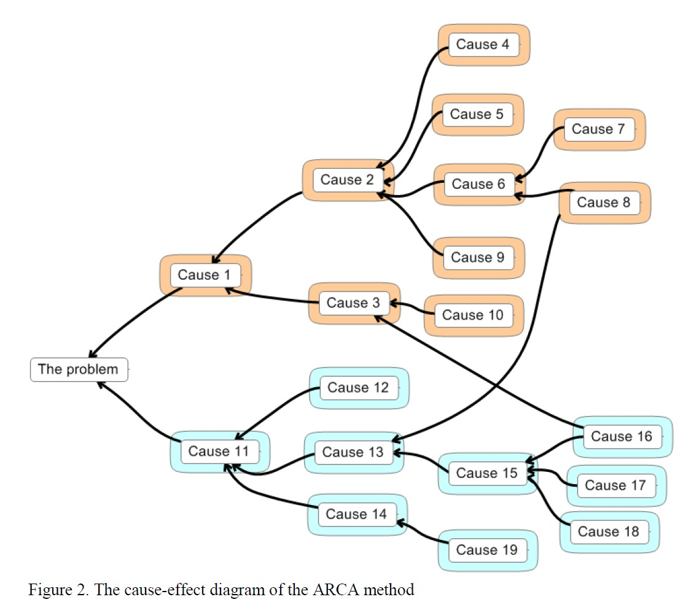

What's in this paper?
- ARCA - A lightweight Root Cause Analysis method is presented
- ARCA doesn't require heavy startup investments as it is based on focus group meetings
- ARCA method is evaluated with four industrial field studies where on average 189 causes and 31 correct actions were identified with an average effort of 89 man-hours
Abstract
Context: The key for effective problem prevention is detecting the causes of a problem that has occurred. Root cause analysis (RCA) is a structured investigation of the problem to identify which underlying causes need to be fixed. The RCA method consists of three steps: target problem detection, root cause detection, and corrective action innovation. Its results can help with process improvement.Objective: This paper presents a lightweight RCA method, named the ARCA method, and its empirical evaluation. In the ARCA method, the target problem detection is based on a focus group meeting. This is in contrast to prior RCA methods, where the target problem detection is based on problem sampling, requiring heavy startup investments.
Method: The ARCA method was created with the framework of design science. We evaluated it through field studies at four medium-sized software companies using interviews and query forms to collect feedback from the case attendees. A total of five key representatives of the companies were interviewed, and 30 case participants answered the query forms. The output of the ARCA method was also evaluated by the case attendees, i.e., a total 757 target problem causes and 124 related corrective actions.
Results: The case attendees considered the ARCA method useful and easy to use, which indicates that it is beneficial for process improvement and problem prevention. In each case, 24 to 77 target problem root causes were processed and 13 to 40 corrective actions were developed. The effort of applying the method was 89 man-hours, on average.
Conclusion: The ARCA method required an acceptable level of effort and resulted in numerous high-quality corrective actions. In contrast to the current company practices, the method is an efficient method to detect new process improvement opportunities and develop new process improvement ideas. Additionally, it is easy to use.
Ref
Lehtinen. T. O. A., Mäntylä M. V., and Vanhanen J. "Development and Evaluation of a Lightweight Root Cause Analysis Method (ARCA method) - Field Studies at Four Software Companies", Information and Software Technology, vol. 53, issue 10, October 2011, pp.1045-1061
Link (pdf)
{kind=link}